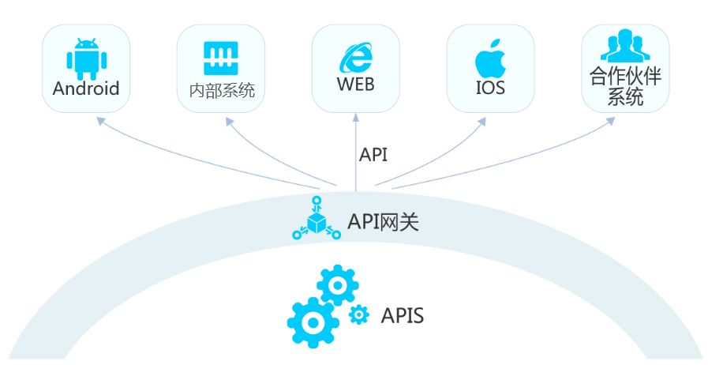
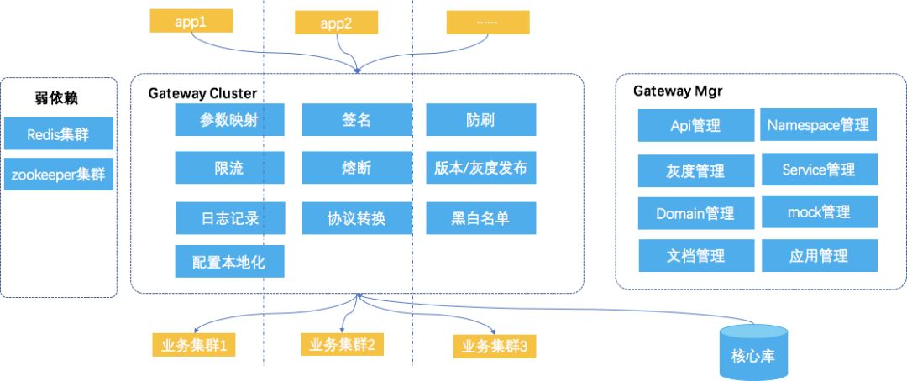
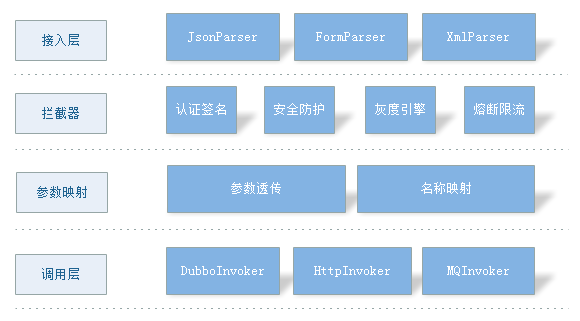
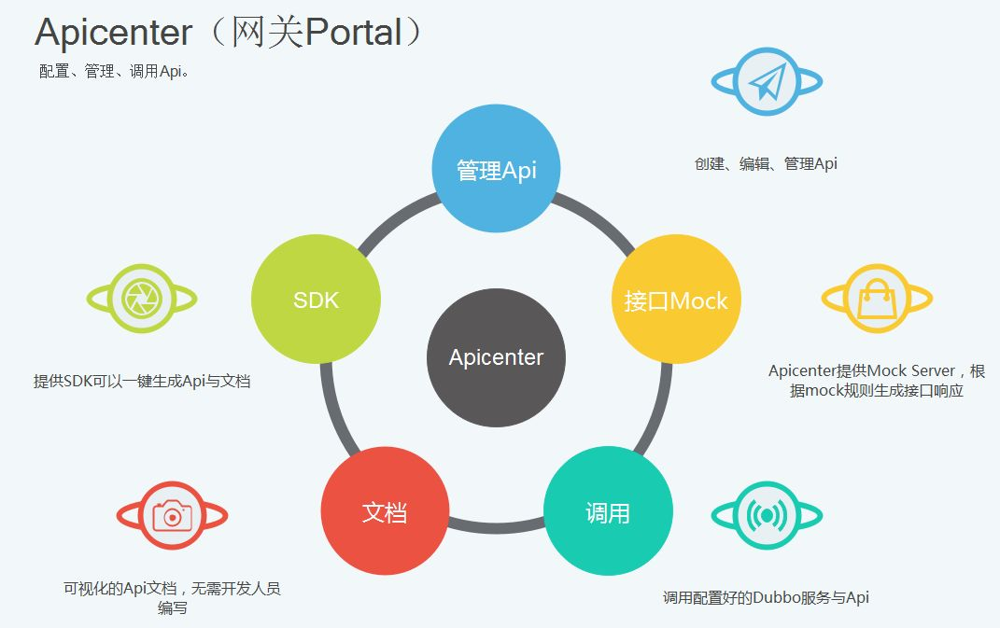
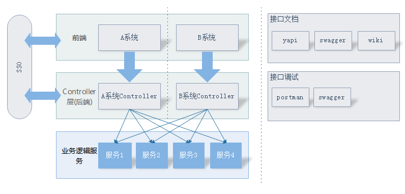
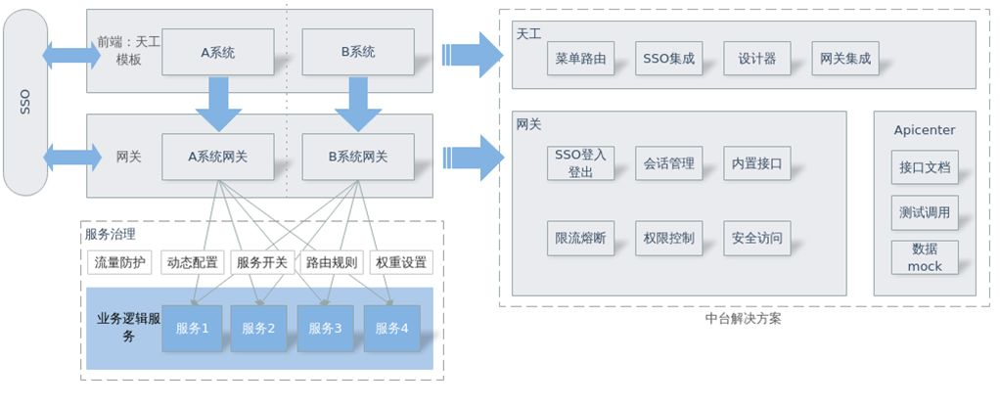
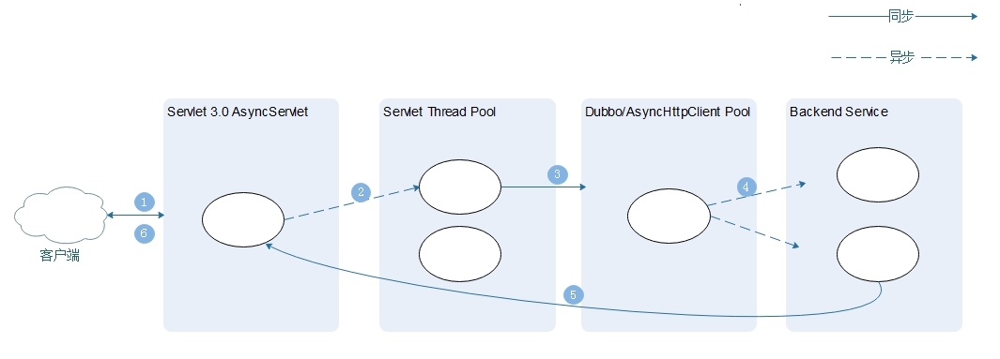
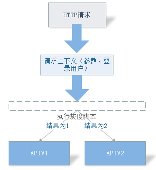

中通API网关实践
背景
在微服务的概念流行之前，API网关就已经存在了，最初是作为开放平台，面向合作伙伴提供OpenApi。随着后来微服务的流行，API网关作为系统边界，将所有的服务聚集在一起，是统一的入口，这就要求API网关能够满足不同类型应用、不同场景的需求；在技术上，也面临着可用性、灵活性、安全性等不同的挑战。
随着中通内部应用的大量开发，越来越多的业务系统需要能够快速开发接入，而且要保证安全稳定。所以我们决定采用网关来代理后端服务，同时抽取统一管控服务的流控、鉴权、负载均衡等等，目前市面上已经存在一些开源的网关系统，比如Spring Cloud、Kong等等，由于现在系统中已经存在大量的dubbo服务，所以我们决定通过自研网关来实现网关的通用功能以及一些定制化的开发。
使用场景
在中通，网关主要有以下几种使用场景：
1. 面向第三方合作平台： 我们将内部的下单、物流查询等接口通过API网关提供给商家、合作伙伴调用；
2. 面向移动APP；
3. 面向WEB应用： 一般在前后端分离的场景下使用，后端开发人员开发服务通过API网关暴露给前端。
4. 跨语言服务调用： 中通内部存在多种语言并存的情况，有跨语言调用的情况。
只需维护一个服务，即可面向多端输出；只需调整API定义，即可实现对APP、设备、web端等多种终端的支持，避免多个场景多套API，大幅降低开发成本。

架构与设计
Architecture and Design
设计目标
1. 动态配置： 能够动态新增API；
2. 弹性化： 动态限流与熔断，帮助后端抵挡流量高峰；
3. 安全性： 满足不同场景下的鉴权、安全需求；
4. 无状态： 更好的支持横向扩展；
5. 高可用： 网关作为系统内的单点，必须做到高可用。
以下是核心功能框架图

特点与优势
1. 安全性： 网关可为开发者提供多种授权访问API的方式，从而来消除后端代码的授权问题。网关目前支持中天SSO、签名、时间戳、JWT等验证方式。
2. 弹性： 网关可帮助开发人员限制API的并发数和每秒最大请求数，从而让后端操作可以抵挡流量高峰。还可以通过缓存 API 调用的输出来避免每次都调用后端，从而提升性能，并缩短终端用户遇到的延迟。
3. 生命周期管理： 在发布了 API 之后，开发人员可能会需要构建和测试增强现有功能或添加新功能的新版本。API 网关 支持可以同时操作修改每个API 版本，以便在发布新 API 版本之后，现有应用可以继续调用先前的版本。Api网关还支持自定义切换版本的规则以便线上灰度测试。
4. 协议转换： 网关提供将Dubbo服务转为HTTP协议接口的功能；网关还提供将请求数据投递到用户指定MQ的功能以满足低延迟的需求。
5. 操作监控： 当 API 发布并处于使用状态后，网关会为开发者提供指标控制面板，监控对服务的调用情况。涵盖了 API 调用次数、延迟数据和错误率。你还可以在kibana中指定关键词搜索某次调用，也可以通过kibana来自定义统计API的调用情况。
6. 专为开发者设计： 通过网关，开发者可以迅速的将服务提供成http接口，并可以根据需求自定义多种授权方式；可以迅速搭建基于天工（内部前端框架）-网关的后台管理系统，开发者无需关注sso、session的问题，专注于业务逻辑的开发。
7. 节省时间： 网关提供完善的API文档、调用调试、Mock等功能，开发人员无需自己编写接口文档。
分层实现
中通网关在逻辑上分为四层
接入层，负责请求参数的解析
拦截器层，负责实现网关鉴权、灰度、限流等核心功能
映射层，负责将请求参数映射转换为后端服务所需要的参数
调用层，负责将转换后的参数调用后端服务的功能

高可用
网关作为一个单点，一旦发生故障是灾难性的，我们采用了以下的设计来增加保障网关的高可用性：
1. 限流与熔断： 我们给API提供了不同维度的限流，基于用户和API的维度，可以对每个用户每分钟（每小时、每天）的调用量做限制，也可以对每个API的并发数量做限制。 在任何分布式环境里，故障是难以避免的，我们经常遇到后端服务异常或者超时的情况，这时我们通过引入hystrix来隔离API，使得一个API出现故障时，不会拖累API网关造成整个API网关故障。又因为我们一个API网关包含了几百个API，如果使用线程池的方式，线程会过多，所以我们采用信号量的方式。我们通过apollo配置中心对hystrix的配置进行管理，使得hystrix配置可以被动态修改。
2. 线程隔离： 我们将耗时较长的API隔离开来，放入单独的线程池中执行，当其出现超时或者其他异常时，不会影响其他API的调用。
3. HTTP服务的负载均衡： 由于dubbo自带了负载均衡策略，所以我们对http服务做了负载均衡。目前我们对http服务提供了两种策略，一种是普通的轮循，一种是可以感知服务节点状态的轮循，我们参考了netflix ribbon的设计，会定期的访问http服务，如果服务不可用，则将其从可用列表中移除，如果可用，则将其添加到可用列表中去。
4. 弱依赖第三方服务： 我们对所有的API配置、以及Session信息做了本地缓存，在数据库、Redis出现异常时也不影响接口的访问，由此来降低因第三方服务、中间件不稳定导致的网关故障
网关模块
1. Gateway Web： 网关API入口；
2. Gateway Portal： 统一的管理界面，开发人员可以在此创建配置API。

日志与异常
为了让后端开发人员能方便的查询API调用日志，我们将API调用的参数、耗时、异常等打印到logback，通过logkit收集到kafka，然后消费采集到elasticsearch，通过kibana对日志进行查询和展示。除此之外，我们还定期的对日志进行不同维度的统计（调用量、错误率等），在控制台中展示查询。
WEB应用SSO插件
WEB应用SSO插件是我们调研公司内部当前浏览器端开发的情况推出的前端中台解决方案，结合前端的天工模板，旨在解决当前Web开发中存在的问题，提升开发效率。
这套解决方案有以下的功能：
统一交互前后端交互标准；
SSO登入登出、权限控制等均由天工模板、网关来实现；
提供统一的数据签名、黑白名单、防刷等安全防护；
Apicenter提供统一的文档生成、模拟调用、数据mock功能；
提供前端设计器，通过拖拽组件创建前端页面。
下图是接入Web应用接入网关之前与接入之后的情况：
接入之前：

接入之后：

技术细节
全异步化
同步调用受限于线程数量，而线程资源宝贵，在 API 网关这类高并发应用场景下，一定比例的 API 超时就会让所有调用的 RT 升高，异步化的引入彻底的隔离 API 之间的影响。网关在 Servlet 线程在进行完 API 调用前置校验后，使用Dubbo和AsyncHttpclient 发起远程服务调用，并结束和回收到该线程
使用异步Servlet
使用异步Dubbo
使用异步HTTP库（AsyncHttpclient）

灰度
原理
网关支持同一个API有多个版本，在API被调用时，灰度控制相关的拦截器会在后端服务被调用前执行脚本，根据执行结果确定版本。 为了方便开发人员编写，我们支持js和groovy两种语言的脚本。

应用场景
在脚本中，可以取到HTTP请求的参数、header、IP地址等信息，也可以取到当前登录用户的信息。由此，就可以方便的根据请求参数、根据登录用户和网点来决定调用哪个版本的API。
遇到的问题
problem
dubbo初始化导致heap溢出
没有提供者的Dubbo服务不能不停的初始化，我们有一次线上好几个节点同时出现了故障，排查出来是dubbo服务不停的初始化造成的内存溢出。是因为线上一个Dubbo服务下线了，但是网关的API没有下线，而且调用方也没有停止调用，就导致这个dubbo服务一直不停的初始化。我们先将API下线，并调整了同一个服务两次初始化的间隔时间临时解决了这个问题。
后端服务超时导致网关阻塞
由于servlet默认是阻塞式调用，后端服务大量超时，导致网关线程被占用无法释放，无法接收新的请求，通过异步Servlet和多级线程池的方式，隔离后端服务对网关造成的影响
总结
summary
网关在中通现状
中通的API网关目前服务了内部的众多系统——掌中通、掌上神州、网投系统等，目前日均调用量达到13亿，峰值调用约3万qps。
未来的展望
未来网关将会作为中台解决方案的一员，应用于中通的各种系统，不管是移动端还是浏览器Web端，都有网关的身影；
网关将会提供一系列SDK工具，涵盖API的创建，文档的生成与查看，服务的Mock与测试等，为开发人员提供方便的服务。